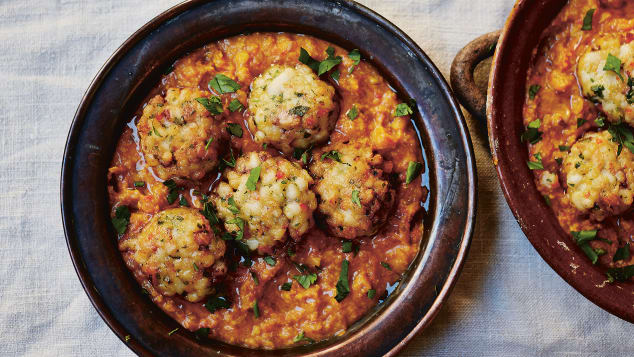

A delicious Albondigas recipe!

Ingredients:
- 1 lb ground meat a mixture of beef and pork
- 2 garlic cloves
- 1 egg
- 2 ½ tablespoons dried breadcrumbs
- 2 tablespoons chopped parsley
- ¾ teaspoon sweet paprika
- ¼ teaspoon smoked paprika
- ¼ teaspoon hot paprika
- 1 teaspoon salt
- ¼ teaspoon black pepper
- 1 tablespoon olive oil
- Tomato sauce:
- 1 medium onion
- 2 tablespoons olive oil
- 3 garlic cloves
- 2 cans chopped tomatoes each weighing 400 g/ 14 oz
- ½ teaspoon fennel seeds
- 1 teaspoon dried oregano
- 2 bay leaves
- ¼ teaspoon cayenne pepper
- 2 tablespoons chopped parsley
- salt and pepper
Instructions:
- Make meatballs: Place the ground meat, grated garlic cloves, lightly beaten egg, dried breadcrumbs,
parsley,
sweet, smoked, hot paprika, salt, and pepper in a bowl. Mix well with your hand. Form between 30 and 35
small meatballs, about the size of a walnut.
- Saute: Heat the 2 tablespoons olive oil in the same skillet. Add the onion and cook it until
translucent.
Add the finely chopped garlic cloves and stir for another minute.
- Simmer: Add the tomatoes from the can, fennel seeds, oregano, bay leaves, cayenne pepper, and chopped
parsley. Add some salt and pepper as well. Stir well and bring to a boil. Simmer on medium-low heat for
20
minutes or until slightly thickened.
- Add the meatballs to the pan and heat them in the sauce for about 5 minutes or cooked through.
- Serve.